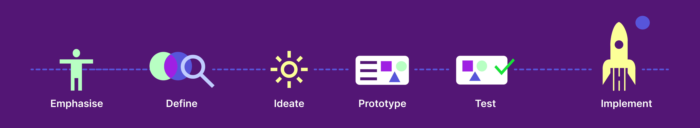
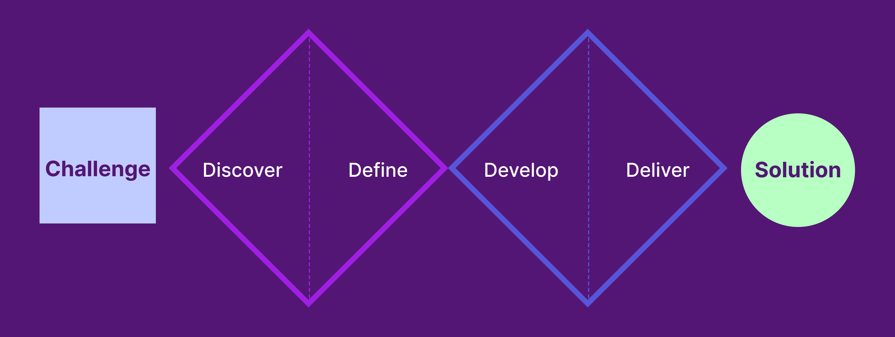

Estela Gaspar UX Designer
Driven by design that empowers people
I specialise in designing complex systems and data-rich platforms, translating technical constraints, APIs, and backend logic into clear, scalable user experiences.
I apply Design Thinking as a structured yet human-centred approach across my projects, moving from research and problem framing through ideation, prototyping, testing, and implementation.
With over ten years of experience across government and enterprise environments, I focus on reducing ambiguity, aligning cross-functional teams, and bringing clarity to interconnected workflows.
Alongside my technical foundation, I have a strong artistic sensibility and a natural inclination for recognising patterns within complex systems.
I am particularly drawn to environments where structure, creativity, and analytical thinking intersect, especially within ML tooling and intelligent platforms where usability and clarity are critical.